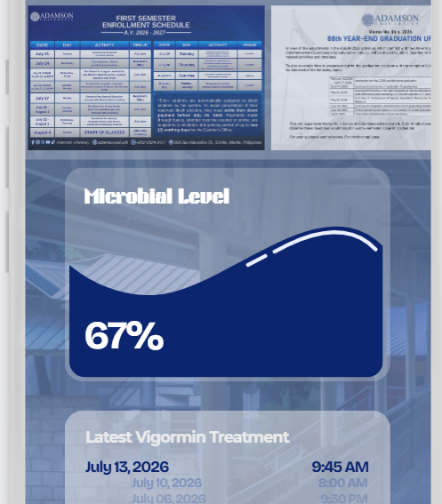
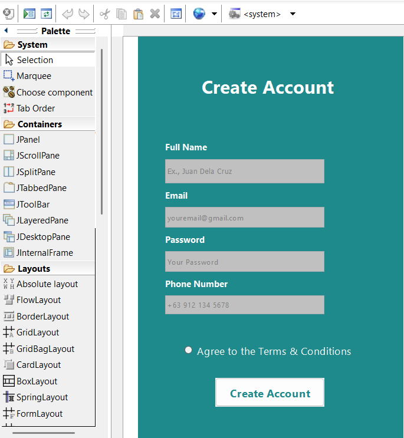

Good day, I am Tristan Montaos a BSIT student at Adamson University. I have experice in programming languages such as Python, C#, JavaSript and MySQL. I am currently taking on Mobile Development as I have a passsion for creating applications that can imrpove the lives of people.

This project proposes a Vigormin application that monitors microbial levels and water quality near Falcon Bridge, supporting wastewater management in line with SDG 6: Clean Water and Sanitation.

This project was a proof-of-concept ATM application designed to provide users with convenient access to banking services, including fund transfers, purchases, and online deposits. This project also sevres as the aplication of what we learned in Computer Proramming.
Email: yourname@email.com
Phone: 0912-345-6789
Location: Manila, Philippines